進度 <<
Previous Next >> W2
W1建網頁
首先先到mde.tw 網站第一頁，點選下面連結
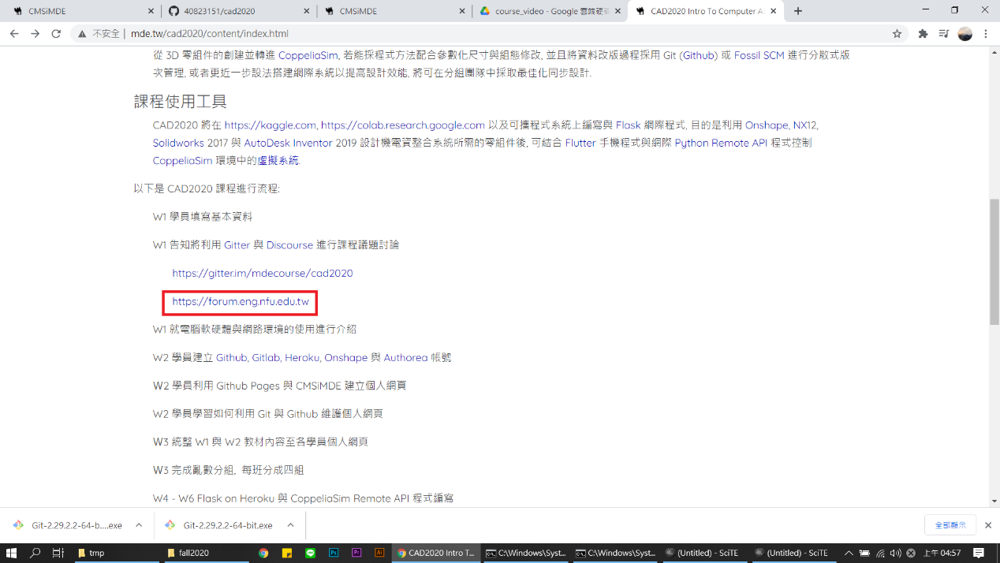
點選此檔案，裡面老師有詳細的教學內容
首先，先下載隨身系統
fall2020(老師有做好的路徑及pip指令)
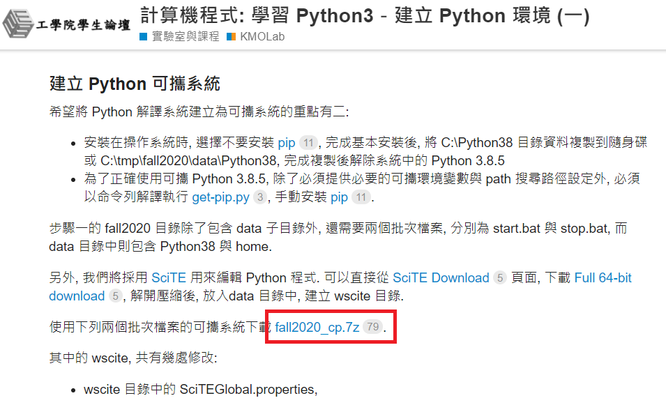
或是直接至官網下載
載完後解壓縮會有這四個檔案
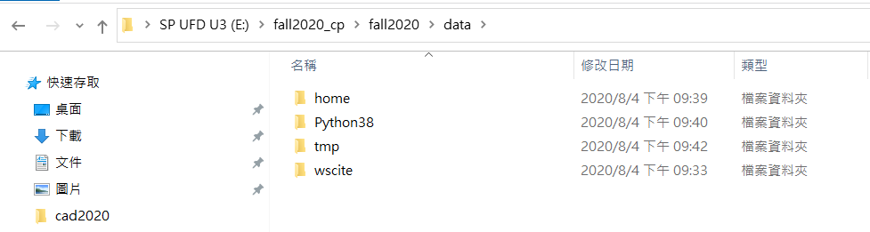
確認python版本
在Y槽打上python
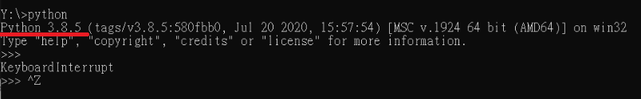
確認版本候用ctrl+Z跳出
再確認擁有的pip附加檔案
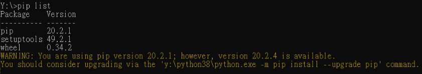
再到git 官網下載portable git
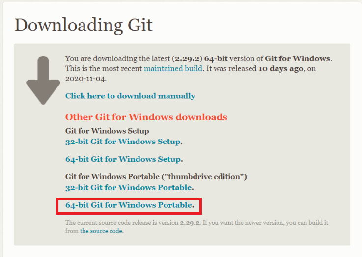
將其下載下來
並且解壓縮到data (自行新增一個新的資料夾)
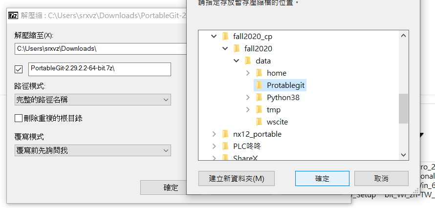
將開始的路徑做更動(將其拉的小白)
打上
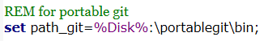
此處路徑要一樣
宣告變數函數path_git的路徑為%Disk%:\portablegit\bin;
再路徑下多打上%path_git%;，才能拿來當作路徑使用
打完後做儲存，並重開
再來設定git config (有對應的語法必須查Google找git windows
例如要設定網路語法
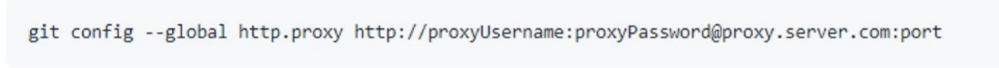
因為程式碼太多所以建議多做一個txt檔，存在data\tmp下當參考資料
例如:
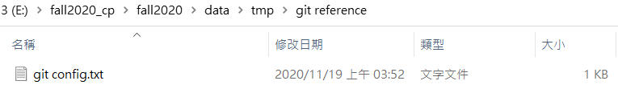
再github 創建倉儲
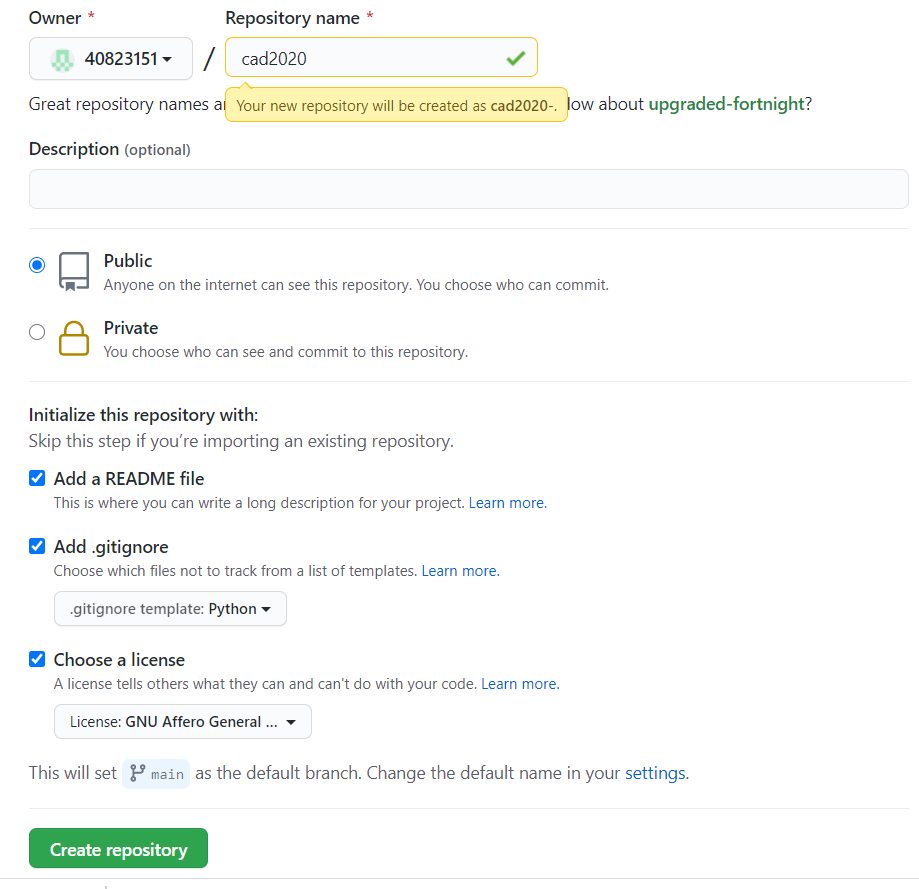
就會得到三個檔案
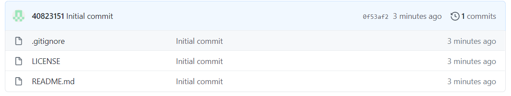
將檔案clone下來
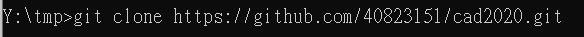
在tmp下就會得到
並且裡面有
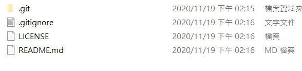
再git資料夾理會有要存版本的資料
我現在希望再cad2020下的sumbugu做版本更動
所以到cad2020裡輸入

再cad2020 下就會得到cmsimde的資料夾
裡面有
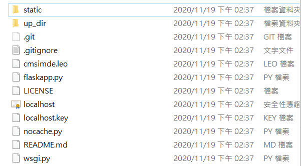
將up_dir的東西全部複製並貼到外面的cad2020裡
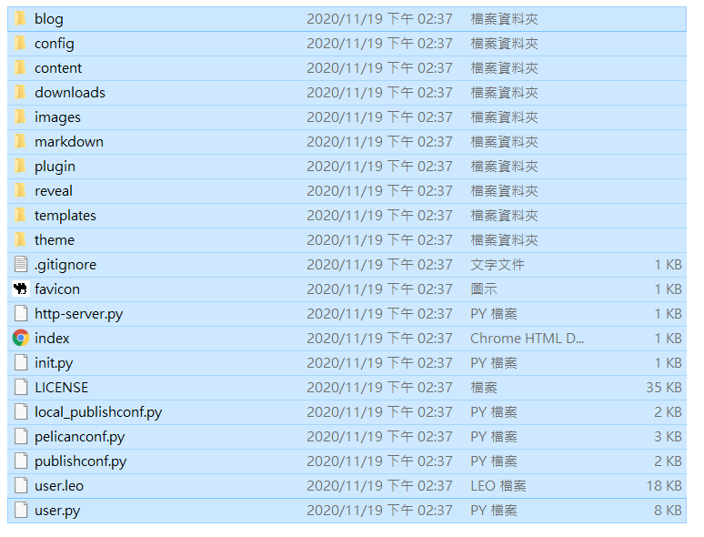
取代up_dir資料夾裡的東西有.gitignore，LICENSE
在小黑下載啟動模組
pip安裝flask flask_cors lxml bs4 markdown鵜鶘leo
補充:載完後解釋:leo
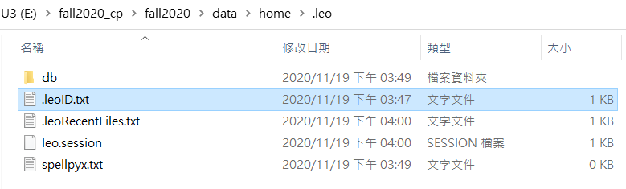
此處為leo設定的地方
之後即可開啟動態
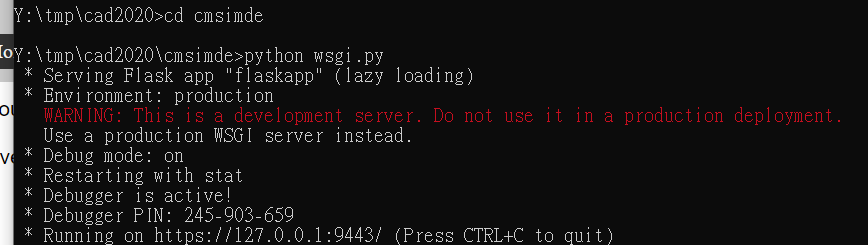
打上python wsgi.py
再google打上http://localhost:9443/
或是https://127.0.0.1:9443/
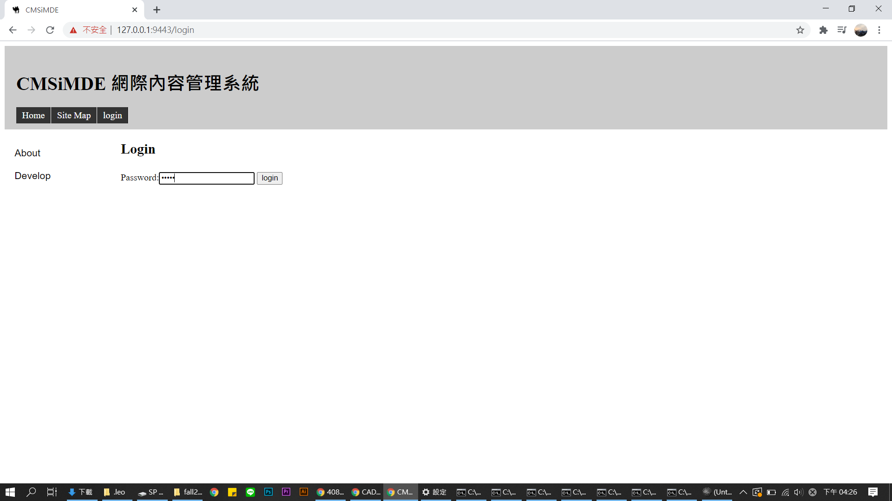
即可登入 (密碼為admin
得網站
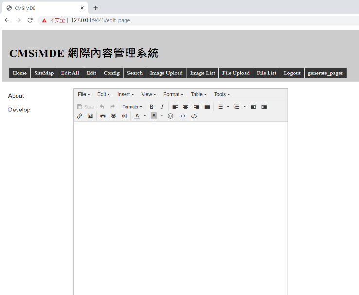
在home中會要做一個.gitconfig
讓電腦知道要用哪知帳號
如果引擎壞掉如cmsimde網站無法開啟

打上git clone –recourse-submodule (“URL”)
網址= https：//github.com/40823131/cad2020
要麼
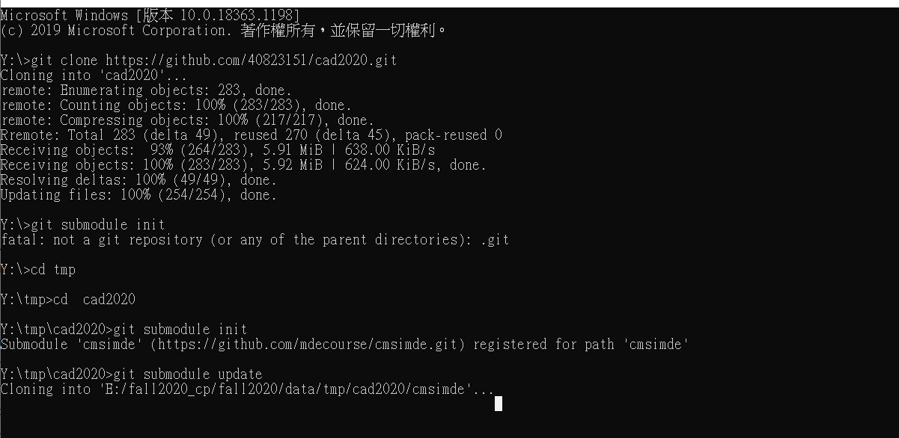
如果網址為[::]:9443
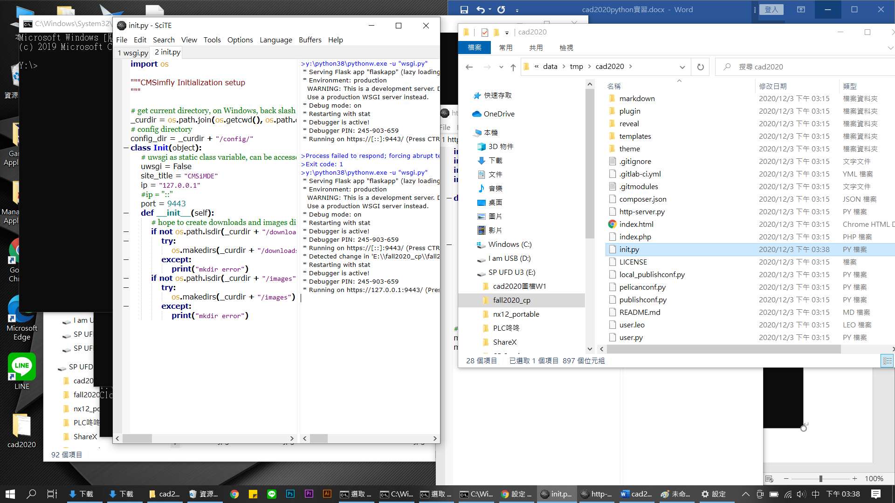
到init.py改網址
進度 <<
Previous Next >> W2